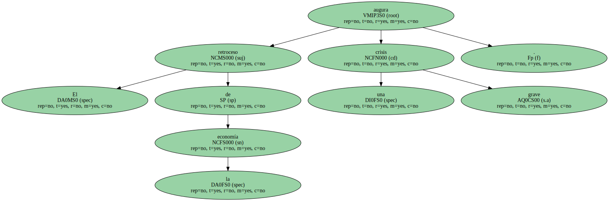
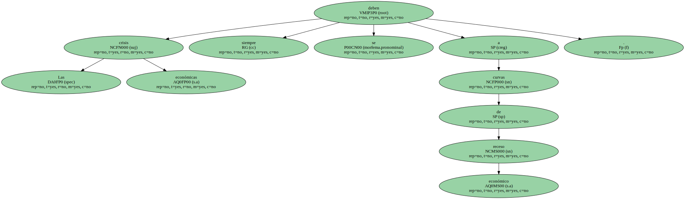
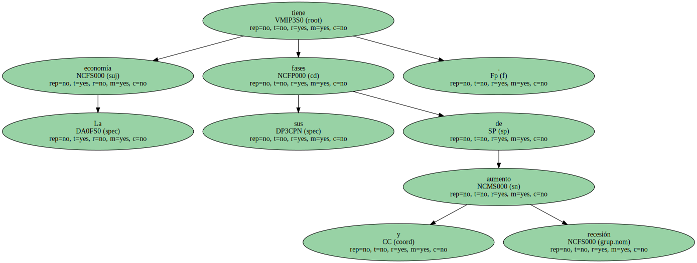
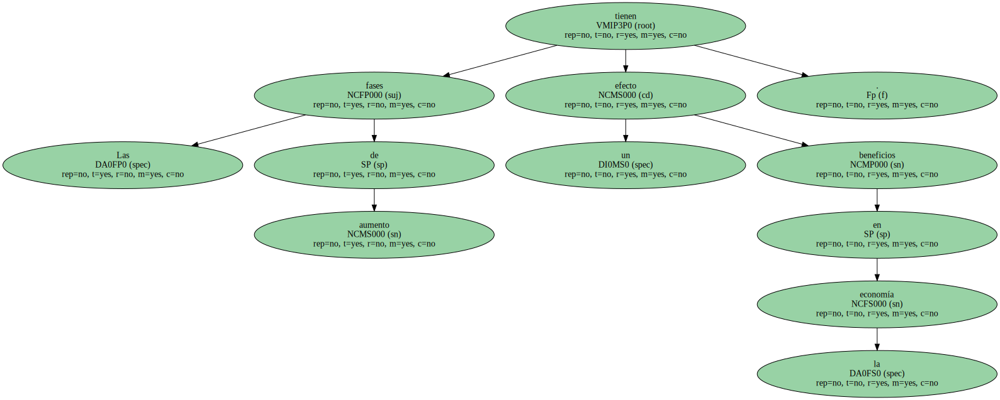
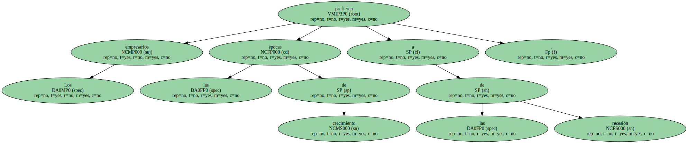
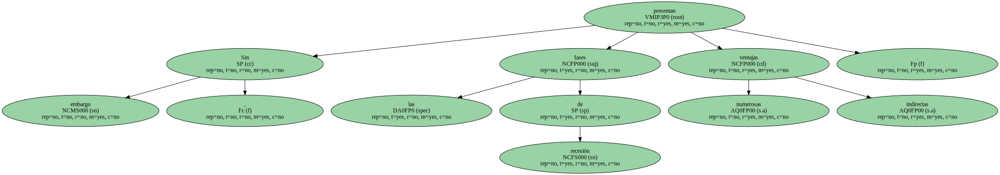
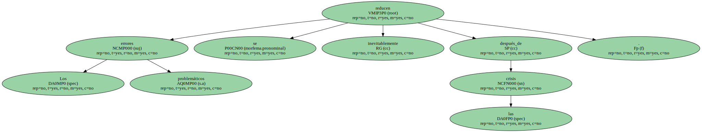

El retroceso de la economía augura una grave crisis.
Las crisis económicas siempre se deben a curvas de receso económico.
La economía tiene sus fases de aumento y recesión.
Las fases de aumento tienen un efecto beneficios en la economía.
Los empresarios prefieren las épocas de crecimiento a las de recesión.
Sin embargo , las fases de recesión presentan numerosas ventajas indirectas.
Las ventajas son la mejora en la capacidad de resiliencia y el aprendizaje de los errores.

Los errores problemáticos se reducen inevitablemente después_de las crisis.
